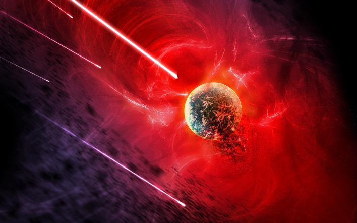
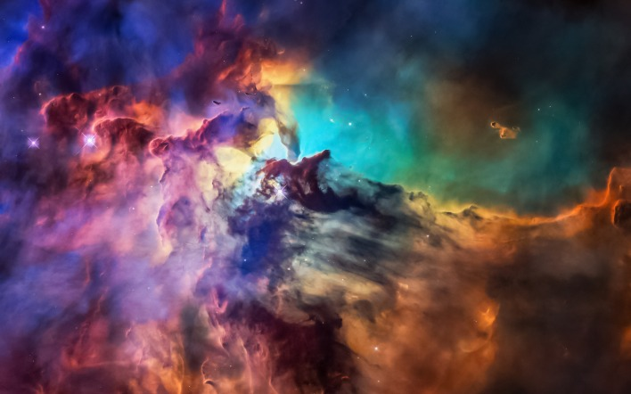

I love space!
There may be more than eight planets in the solar system
The solar system is the most studied part of outer space. According to the official version, it includes eight planets. In fact, there are much more of them. There are at least five "dwarfs" alone here. These are Pluto, Ceres, Haumea, Makemake and Eris. Due to their remoteness from the Earth, they are little studied. Moreover, according to scientists, there may be about 2 thousand more potential dwarf planets in the solar system. In addition, many astrophysicists recognize the existence of a ninth major planet. It is the size of Neptune and ten times the mass of Earth. Scientists began to guess about the existence of the mysterious planet X back in 2014, and in 2016 they received the first evidence using computer simulations.
Space is endless!
A planet made of graphite and diamonds
Astronomers have discovered another mysterious planet in the constellation Cancer. According to the staff of Yale University, it is twice the size and eight times the mass of the Earth. But the main thing is that Janssen is almost entirely composed of graphite and diamonds. Moreover, the latter account for a third of its substance. Forbes has estimated the value of the planet at $26.9 nonillion. By space standards, a giant diamond is located not far from earthlings - only 40 light years away. True, the temperature of its surface reaches 2.148 thousand degrees. And the rotation speed is so high that one year there equals 18 Earth hours. In addition, scientists recently found that one side of the Janssen is in a molten state and is a carbon lava.

You are awesome!
Without the Moon, marine life will die out on Earth!
If the Earth's satellite disappears, most likely, a global catastrophe will not happen. Once it was the main source of light in the dark - now people know how to do without it. And yet, some major changes will occur. For example, many water sports will come to an end. The phases of the moon affect the waves - passing over the surface of our planet, it "pulls" masses of water along with it. In addition, marine life will die out, whose life is directly related to the tides. Without a satellite, there will be no solar and lunar eclipses on Earth, and the tectonic plates will shift, causing earthquakes and volcanic eruptions. But the main thing is that the planet's climate will no longer be the same.
I want to go to space!
Silence reigns in space
The quietest place on our planet is the anechoic chamber at the Orfield Laboratory, which absorbs up to 99.99% of sounds. But even there you will not be able to hear absolute silence. It will disrupt the work of our lungs and circulatory system. Today, various studies are carried out in this laboratory and devices are tested. And in such isolated spaces, NASA specialists test future astronauts. There is no sound in space because there is no air. Therefore, even powerful galactic explosions occur in complete silence. It is very difficult to work in such conditions: just a few minutes in a sound vacuum cause panic attacks and severe auditory hallucinations in unprepared people.